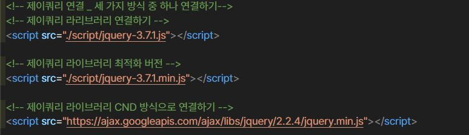

• 제이쿼리란, 자바스크립트의 생산성을 향상시켜주는 자바스크립트의 '라이브러리 언어'
• 자바스크립트 라이브러리 : 자주 사용하는 코드들을 재사용 할 수 있는 형태로 가공하여 프로그래밍의 효율성을 높여주도록 만든 코드들의 집합
• 앨리먼트(html 태그 요소)를 선택하는 강력한 기능을 제공함 (css 선택자 보다 많음)
• 선택된 앨리먼트를 제어 할 수 있는 다양한 함수를 제공함
• 자바스크립트의 자주 사용하는 기능을 라이브러리화한 언어
• 제이쿼리 공식사이트에서 라이브러리 파일을 다운로드 받아 html 문서의 head 요소 안에 script 작성하여 연결
• https://jquery.com/ 페이지에서 오른쪽 '다운로드' 페이지 > 아래쪽 'google cdn 메뉴 클릭 > 1x, 2x, 3x 버전 선택하여 복사 후 html head 영역 안에 붙여넣기 하기
• $('선택대상').메서드();
• jquery('선택대상').메서드();
• 제이쿼리에서는 '$' 기호를 맨 앞에 넣고 시작을 하는데 이것은 괄호() 안에 넣을 대상을 선택하기 위함이다.
• $('h2'), $(window), $('#id.p01') 등
• html 태그
• css 선택자
• 자바스크립트 객체(document.window 등)
// 주로 이 방법으로 사용
$(document).ready(function(){ //문서객체(html문서)가 로딩이 완료되면 제이쿼리 내용을 실행한다.
실행 할 내용;
});
//3x버전(높은 버전)에서만 사용 가능
$(function(){
실행 할 내용;
});
//옛날 방식으로 지금은 사용하지 않음
jquery(function(){
실행 할 내용
});
//옛날 방식으로 지금은 사용하지 않음
jquery(document).ready(function(){
실행 할 ㅐ용
});